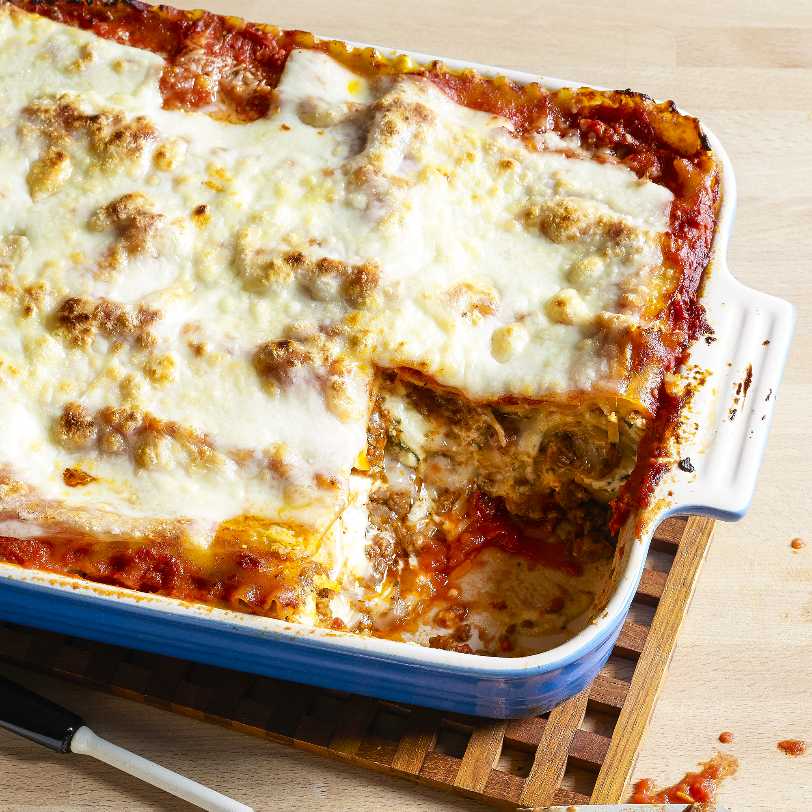

Lasagna is by far the best Italian plate in the world, here is why. The taste of it is amazing there are many ways to describe it. Such as the cheesy warm goodness of the taste that makes it amazing. Also the salty pasta layers it has, and can also add hot sauce to give it a little spice. Not to mention the look of the plate. The brown meat and the red tomato sauce looks mouth watering to anyone who has taste buds. You know its fresh out the oven when the steam comes straight out when you cut apiece off. The smell is the best smell in the world. The briny sauce and pasta combination it gives makes it smell fresh. The meat and cheese also have a good combo make it tasty to look forward to. The feel of the lasagna. It is soft and saucy when preparing it from scratch. The Pasta and cheese melts the cheese to make it feel smooth and the slippery pasta when you cant pick it with a fork. Last but not least the sound of the best plate in the world being made. Its yet silent but you can hear the sizzle of the platter. And when it is being served the squishy sound it makes when you chew it up.